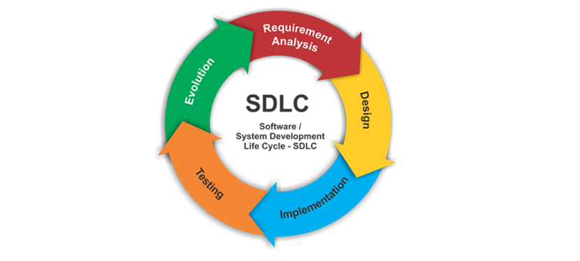

Software Development Life Cycle
Planning and requirement analysis
Defining requirements
Deigning the Product Architecture
Developing the Product
Testing the Product
Deployment in the Market
Maintenance

Defining The Application
The first stage is requirement gathering and analysis, which is when senior leadership begins planning the project. The client provides the requirements to the organization, and analysis begins to determine project approach, deliverables, and anticipated final outcomes. Business requirements from the customer are gathered to determine who will use the software and how.
User Registration
Login
Logout
Dashboard Landing Page
Design
Layout: Responive Web Design
Layout: Mobile Support
Login/Logout
Color Scheme
Development
The third stage is coding and implementation, which is when the design documents from the second phase are used to implement the design and produce the code. The code development is the longest part of the SDLC process.
Testing
After the code is developed, the fourth stage, testing, can begin. The code is tested based on the customer's requirements to ensure the code works according to specifications.
Deployment
After the code is tested, the fifth stage, deployment occurs. This is when the product is delivered to the customer.
Maintenance
The final stage is maintenance or post-deployment. Once the product is in use, the customer may experience technical issues, and maintenance of the software is conducted at that time.